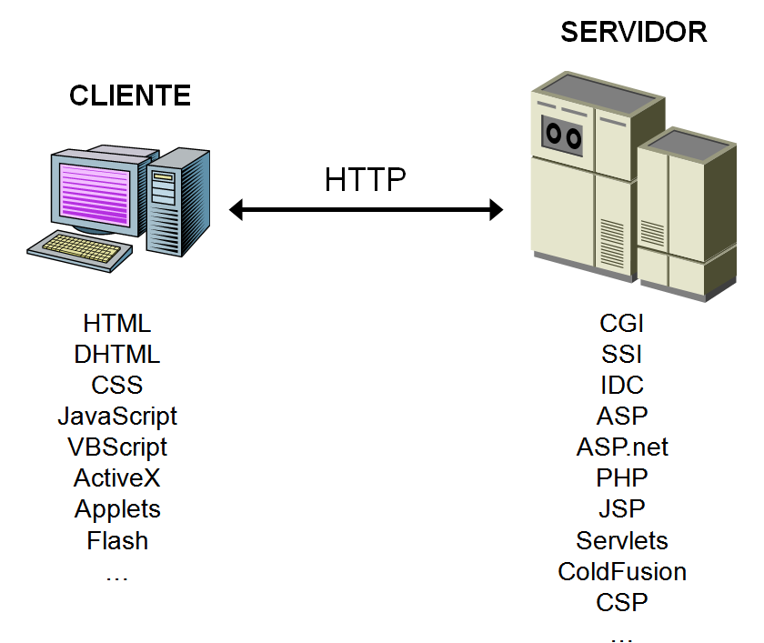

Analizando el mercado actual de Bases de Datos, el uso de los diferentes productos existentes se ha segmentado.
| Usuarios BD | Bases de datos |
|---|---|
| Grandes Empresas | La mayoría han apostado por Oracle por su seguridad y soporte. |
| Pequeñas y medianas Empresas (PYMES) | Aquí es donde más abierto está el mercado. Entre las más utilizadas están: Oracle Express, SQL Server de Microsoft, MySQL Server y PostgreSQL |
| Pequeños negocios | Utilizan software propietario que utiliza SGBD con prestaciones de tipo ofimático como Microsoft Access. |
| Aplicaciones y páginas web | La mayoría de los proveedores de internet tienen incluido en sus ofertas MySQL y PostgreSQL, pero los usuarios suelen usar MySQL. |
Aunque los aspectos fundamentales a la forma de utilizar un SGBD son muy parecidos, en este curso nos hemos centrado en MySQL.
MySQL es un sistema de gestión de bases de datos SQL (SGBD DBMS) multihilo y multiusuario que tiene más de 10 millones de instalaciones según MySQL AB de Oracle (https://es.wikipedia.org/wiki/MySQL_AB).
Las librerías para acceder a bases de datos MySQL están disponibles en los principales lenguajes de programación con APIs específicas de lenguaje. Además,una interfaz ODBC llamada MyODBC permite utilizar lenguajes de programación adicionales que soportan la interfaz ODBC para comunicarse con una base de datos MySQL. El servidor MySQL y las bibliotecas oficiales se implementan principalmente en ANSI C.
MySQL es popular para aplicaciones web y actúa como el componente de base de datos de las plataformas LAMP, MAMP y WAMP (Linux/Mac/Windows-Apache-MySQL-PHP/Perl). Su popularidad como aplicación web está estrechamente ligada a la popularidad de PHP, que a menudo se combina con MySQL. PHP y MySQL son componentes esenciales para ejecutar la popular plataforma de Gestor de Cotnenidos WordPress.
Cliente / Servidor
La arquitectura cliente-servidor es un modelo de diseño de software en el que las tareas se reparten entre los proveedores de recursos o servicios, llamados servidores, y los demandantes, llamados clientes.
Un cliente realiza peticiones a otro programa, el servidor, quien le da respuesta. Esta idea también se puede aplicar a programas que se ejecutan sobre una sola computadora, aunque es más ventajosa en un sistema operativo multiusuario distribuido a través de una red de computadoras.
Cuando utilizamos un navegado en Internet y accedemos a un servidor mediante una dirección web, utilizamos el protocolo HTTP o HTTPS para enviar información del cliente al servidor y viceversa.
Tanto cliente como servidor ejecutan código y por lo tanto, procesan las instrucciones de programas y aplicaciones, y para ello se utilizan diferentes lenguajes de programación. A continuación se muestran algunos ejemplos:

Puedes consultar el Tiobe Index de los lenguajes de programación más usados en: https://www.tiobe.com/tiobe-index/
Puedes consultar la web del Instituto de Ingeniería Eléctrica y Electrónica (Institute of Electrical and Electronics Engineers o IEEE), que con más de 425.000 miembros y voluntarios en 160 países, también publica su propia lista de lenguajes de programación más populares (se puede filtrar por Web):
https://spectrum.ieee.org/static/interactive-the-top-programming-languages-2018
Programación en BD
Los SGBD relacionales usan SQL como lenguaje de DCL, DDL y DML.
En las unidades anteriores hemos trabajado tanto el DDL como el DML.
Las bases de datos relacionales poseen unas extensiones del lenguaje de consultas SQL que les permiten crear bloques de código que se ejecutan como un todo. Hay dos tipos de bloques de código:
Todas las bases de datos relacionales permiten alamacenar código aunque la extemsión del lenguaje tiene una denominación diferente dependiendo del SGBD; en Oracle se llama PL/SQL, en SQL Server Transact-SQL y en MySQL Stored Procedure Programming.
En este tema nos centraremos en MySQL para trabajar con programación a través de procedimientos, funciones y tratamiento de eventos.
Los procedimientos almacenados y funciones son nuevas funcionalidades incluidas desde la versión de MySQL 5.0.
Algunas situaciones en que los procedimientos almacenados pueden ser particularmente útiles:
Los procedimientos almacenados pueden mejorar el rendimiento ya que se necesita enviar menos información entre el servidor y el cliente. El inconveniente es que aumenta la carga del servidor de la base de datos ya que la mayoría del trabajo se realiza en la parte del servidor y no en el cliente. Considere esto, si muchas máquinas cliente (como servidores Web) se sirven a sólo uno o pocos servidores de bases de datos.
Los procedimientos almacenados le permiten tener bibliotecas o funciones en el servidor de base de datos. Esta carácterística es compartida por los lenguajes de programación modernos que permiten este diseño interno, por ejemplo, usando clases. Usando estas carácterísticas del lenguaje de programación cliente es beneficioso para el programador incluso fuera del entorno de la base de datos.
Comenzaremos por crear nuestro primer script en MySQL con sentencias de Stored Procedures.
Utilizaremos SELECT para mostrar resultados y SET para guardar valores en variables.
Los scripts de MySQL se puede ejecutar directamente con el programa mysql.exe.
mysql.exe es una shell que conecta con el servidor de MySQL y permite ejecutar instrucciones de SQL. Cuando nos conectamos tenemos que indicar y contraseña si procede.
Para conectarnos como root hacemos:
C:\Program Files\MySQL\MySQL Server 8.0\bin> mysql -u root -p
Ejemplo 1
Scripts
Crear un script de nombre b06ejer01.sql en una carpeta de nuestro gusto,por ejemplo C:\GBD-UD06. El script calcula la superficie de una pared a partir del ancho y alto de la misma. El ancho y alto se cargan previamente en dos variables.
El script lo creamos con un editor de texto y su contenido es el siguiente:
-- En x tenemos el ancho de la pared
SET @x = 9;
-- En y tenemos la altura
SET @y = 15;
-- La instrucción select calcula y muestra la superficie de la pared conjuntamente con el ancho y la altura.
SELECT @x AS ancho, @y AS alto, @x * @y AS superficie;
El script se puede ejecutar directamente con el programa mysql.exe. Una vez que hayamos conectados utilizamos el comando source para ejecutar el script.
mysql> source C:/GBD-UD6/b06ejer01.sql;
Query OK, 0 rows affected (0.00 sec)
Query OK, 0 rows affected (0.00 sec)
+-------+------+------------+
| ancho | alto | superficie |
+-------+------+------------+
| 9 | 15 | 135 |
+-------+------+------------+
1 row in set (0.00 sec)
Los nombres de las variables en los scripts tienen que comenzar con el símbolo @.
Las instrucciones SET y SELECT pueden ejecutarse también directamente desde el intérprete de comandos.
Los comentarios dentro de los SCRIPTS pueden hacerse de la siguiente manera:
# comentario con almohadilla (solo una linea)
-- Comentario con dos guiones (solo una linea)
/* comentario con barra asterisco (solo una linea) */
/*
esto es
un comentario
multilinea
*/
Para definir una variable de usuario utilizaremos el carácter @. Asignaremos valores con el comando SET:
SET @num = 9, @cad = 'Hola';
SET @num := 9, @cad := 'Hola';
Y para mostrar sus valores la instrucción SELECT:
SELECT @num, @cad;
Las variables puede usarse en instrucciones SELECT de recuperación de datos, como:
SELECT * FROM ciudades WHERE codigo > @num;
También podemos calcular y asignar valor en la misma instrucción, almacenando resultados de nuestras SELECT, pero en este caso sólo funciona el operador :=. Si no deseamos que se produzca la salida del resultado, sino sólo almacenarlo, podemos usar la cláusula INTO:
Ejemplo 2
Scripts
Crear un script que asigne a la variable numreg la cantidad de ciudades que hay en la tabla ciudades.
-- Asigna el número de ciudades a la variable numreg y muestra el resultado por pantalla.
SELECT @numreg := COUNT(*) FROM ciudades;
-- Asigna el número de ciudades a la variable numreg pero NO muestra el resultado por pantalla.
SELECT COUNT(*) INTO @numreg FROM ciudades;
Para consultar todas las variables creadas por el usuario, podemos consultar la tabla performance_schema.user_variables_by_thread a partir de la versión 5.7 de MySQL:
SELECT * FROM performance_schema.user_variables_by_thread;
MySQL tiene muchas variables de sistema que pueden consultarse en https://dev.mysql.com/doc/refman/8.0/en/server-system-variable-reference.html y que podemos consultar con la instrucción SHOW VARIABLES LIKE.
SHOW VARIABLES LIKE '%';
Las variables de sistema pueden ser de tipo:
Para mostrar el valor de alguna variable global utilizaremos una doble @ tal como se muestra en este ejemplo con la variable max_connections.
SELECT @@max_connections;
Para asignar un nuevo valor a la variable GLOBAL utilizaremos una de las dos opciones siguientes:
SET GLOBAL max_connections = 50;
SET @@global.max_connections = 50;
Por ejemplo la variable lc_messages define el idioma en que se muestran los mensajes de error. Podríamos tener el valor en_US para tenerlos en inglés o es_ES para español.
Para asignar un nuevo valor a la variable de sistema de tipo SESSION utilizaremos una de las siguientes cuatro opciones mostradas en el ejemplo con la variable lc_messages.
SET lc_messages = 'es_ES';
SET @@lc_messages='es_ES';
SET SESSION lc_messages = 'es_ES';
SET @@local.lc_messages='es_ES';
Prueba a ejecutar las siguientes instrucciones después de conectar con mysql.exe y comprueba el resultado:
mysql> SET SESSION lc_messages='en_US';
mysql> MENSAJES;
ERROR 1064 (42000): You have an error in your SQL syntax; check
the manual that corresponds to your MySQL server version for the
right syntax to use near 'MENSAJES' at line 1
mysql> SET SESSION lc_messages='es_ES';
mysql> MENSAJES;
ERROR 1064 (42000): Algo está equivocado en su sintax cerca
'MENSAJES' en la linea 1
Ejemplo 3
Scripts
Crea un script que conecte con la base de datos world y guarde en una variable el número de registros de la tabla city y en otra el número de registros de la tabla country. Ejecutar un SELECT que muestre la cantidad de registros de las dos tablas.
El script b06ejer02.sql tendrá las siguiente instrucciones:
USE world;
SELECT @numCity := count(*) FROM city;
SELECT @numCountry := count(*) FROM country;
SELECT @numCity AS NREG_City, @numCountry AS NREG_Country;
Para ejecutar el script realizamos los siguientes comandos:
C:\> cd "\Program Files\MySQL\MySQL Server 8.0\bin\mysql"
C:\Program Files\MySQL\MySQL Server 8.0\bin\mysql> mysql -u root -p
mysql> source C:/GBD-UD6/b06ejer02.sql;
La mayoría de scripts los generamos en UTF8 por lo que deberemos cambiar el conjunto de carácteres de la ventana de comandos del CMD.
// Cambiar a juego de carácteres en UTF8
C:\> chcp 65001
// Cambiar a juego de carácteres en ANSI West European Latin
C:\> chcp 1252
Para cambiar en timepo real el juego de carácteres en el resultado de los SELECT en MySQL, podemos utilizar el comando SET NAMES.
// Cambiar a juego de carácteres en UTF8
mysql> SET NAMES 'utf8';
// Cambiar a juego de carácteres en ANSI West European Latin
mysql> SET NAMES 'latin1';
El comando mysql dispone además de muchos parámetros. Usaremos algunos:
| Parámetro | Descripción |
|---|---|
| --silent | En el modo silencioso no muestra tantos mensajes |
| --table | La salida de los SELECT la muestra en formato tabla |
| --html | La salida de los SELECT la muestra en formato HTML |
Ejemplo de forma de conexión.
//Conectarse como root en modo silencioso
C:\> mysql -u root -p --silent --table
Para poder almacenar un conjunto de instrucciones en la propia base de datos podemos utilizar los procedimientos.
La sintaxis más sencilla es la siguiente:
DELIMITER //
CREATE PROCEDURE nombre()
BEGIN
instrucciones;
END //
DELIMITER ;
Antes de comenzar debemos seleccionar la base de datos con la que vamos a trabajar. Por ejemplo para trabajar con la base de datos world ejecutaríamos:
USE world;
Si por ejemplo deseamos un procedimiento que muestre el día y hora sería:
Ejemplo 1
Procedimientos
Realizar un procedimiento que calcule el día y la hora actual y la muestre por pantalla.
DELIMITER //
CREATE PROCEDURE diayhora()
BEGIN
SELECT NOW();
END //
DELIMITER ;
Para llamar al procedimiento se utiliza el comando CALL.
Ejemplo 2
Procedimientos
Ejecutar el procedimiento diayhora creado en el ejemplo anterior.
CALL diayhora();
Los procedimientos se asignan a una base de datos. Esto quiere decir que debemos indicar el SCHEMA o BASE DE DATOS al crear o eliminar el procedimiento. Podemos usar previamente la selección de base de datos por defecto con el comando USE como en el ejemplo anterior o bien indicarla al crear el procedimiento como se hace en los SELECT de las tablas. Por ejemplo para crear el procedimiento en la base de datos world, independientemente de cual tengamos seleccionada, la cabecera del procedimiento sería: CREATE PROCEDURE world.diayhora().
En la declaración del procedimiento hemos usado delimiter pero, ¿por qué es importante el uso del DELIMITER?.
Ya sabemos que por defecto MySQL usa como delimitador de fin de instrucción el punto y coma (;) , es decir, cada vez que encuentre punto y como(;) ejecuta hasta ahí. Como en los procedimientos hay varias líneas de códigos y algunas de ellas terminan con este delimitador se ejecutaría solo hasta ahí, lo que ocasionaría un error, y es por esto que es necesario indicarle a MySQL que utilice otro dlimitador que puede ser cualquiera. Ese es el próposito de la cláusula DELIMITER.
Para nuestro ejemplo usamos // pero se podría usar también $$ o lo que queramos. Al finalizar la creación del procedimiento o función volvemos a cambiarlo por ;
DELIMITER $$
...
$$
DELIMITER ;
Para poder agrupar varias instrucciones en bloques utilizaremos: BEGIN ... END.
En los procedimientos es necesario porque define el espacio de instrucciones que se almacenan.
Estos bloques de código se usarán más adelante también en estructuras de control como: IF .. THEN .. END IF
Para eliminar un procedimiento utilizaremos la instrucción DROP PROCEDURE.
DROP PROCEDURE nombreProcedimiento;
Si queremos redefinir un procedimiento, para evitar que si no existe muestre un error lo haremos utilizando la cláusula IF EXISTS.
DROP PROCEDURE IF EXISTS nombreProcedimiento;
Cuando necesitamos variables que usaremos dentro del procedimiento debemos usar la instrucción DECLARE como si lo hiciéramos en la instrucción CREATE TABLE. Las variables sólo serán visibles y accesibles dentro del procedimiento.
Estas variables no comienzan con el carácter especial @, al contrario de lo que sucede en los scripts.
DECLARE nombreVariable tipoVariable [opciones];
Las instrucciones de un procedimiento (o función) se ejecutan secuencialmente empezando por la instrucción que está justo después de la palabra reservada BEGIN y acabando por la que está justo antes de la palabra reservada END. Esta forma de ejcución de instrucciones se llama secuencial. El siguiente diagrama representa un bloque de 3 instrucciones que se ejecutan secuencialmente. El punto negro inicial representa el BEGIN y el punto con el aspa el END.
Las estructuras de control permiten modificar el flujo de ejecución de las instrucciones de un programa.
No obstante, hay algunas directiva que nos permiten cambiar el orden secuencial de ejecución de instrucciones. A estas directivas comunmente se les llama estructuras de control. Las estructuras de control se pueden englobar en dos categorías:
Sentencia IF
Es la más sencilla de todas. Nos permite ejecutar unas instrucciones u otras según una condición. Hay 3 variantes:
Variante 1
Esquema general
IF [condicion] THEN
[sentencia o bloque de sentencias]
END IF;
El rombo equivaldría al END IF.
Variante 2
Esquema general
IF [condicion] THEN
[sentencia o bloque de sentencias]
ELSE
[sentencia o bloque de sentencias]
END IF;
Variante 3
Esquema general
IF [condicion] THEN
[sentencia o bloque de sentencias]
ELSEIF [condicion] THEN
[sentencia o bloque de sentencias]
ELSE
[sentencia o bloque de sentencias]
END IF;
Puede haber tantas cláusulas ELSEIF como queramos pero sólo puede haber una cláusula IF y una ELSE.
Ejemplo 3
Procedimientos IF
En el siguiente ejemplo creamos un procedimiento para mostrar un color de forma aleatoria según el valor obtenido con la función RAND() la cual devuelve un número real entre 0 y 1, es decir, obtenemos un número n que cumple 0 ≤ n < 1.
-- Eliminar el procedimiento si ya existe
DROP PROCEDURE IF EXISTS colores;
-- Crear el procedimiento
DELIMITER //
CREATE PROCEDURE colores()
BEGIN
DECLARE num DECIMAL(15,2);
SET num := RAND();
IF (num < 0.25) THEN
SELECT 'verde' AS COLOR;
ELSEIF (num < 0.50) THEN
SELECT 'amarillo' AS COLOR;
ELSEIF (num < 0.75) THEN
SELECT 'naranja' AS COLOR;
ELSE
SELECT 'rojo' AS COLOR;
END IF;
END //
DELIMITER ;
-- Llamar al procedimiento
CALL colores();
Sentencia CASE
Cuando tenemos varias opciones como en el ejemplo anterior, podemos utilizar también la estructura CASE.
CASE [variable o expresión]
WHEN [valor] THEN
[sentencia o bloque de sentencias]
[WHEN [valor] THEN
[sentencia o bloque de sentencias] ]
[...]
[ELSE
[sentencia o bloque de sentencias] ]
END CASE;
O bien
CASE
WHEN [condicion] THEN
[sentencia o bloque de sentencias]
[WHEN [condicion] THEN
[sentencia o bloque de sentencias] ]
[...]
[ELSE
[sentencia o bloque de sentencias] ]
END CASE;
Los diagramas de flujo de la estructura CASE son iguales a los de la estructura IF (variante 3).
Si realizamos el mismo ejemplo con CASE quedaría:
Ejemplo 4
Procedimientos CASE
Este ejemplo es igual que el ejemplo anterior pero resuelto utilizando la estructura condicional CASE.
/* Eliminar el procedimiento si ya existe */
DROP PROCEDURE IF EXISTS colorescase;
/* Crear el procedimiento */
DELIMITER //
CREATE PROCEDURE colorescase()
BEGIN
DECLARE num DECIMAL(15,2);
SET num := RAND();
CASE
WHEN (num < 0.25) THEN
SELECT 'verde' AS COLOR;
WHEN (num < 0.50) THEN
SELECT 'amarillo' AS COLOR;
WHEN (num < 0.75) THEN
SELECT 'naranja' AS COLOR;
ELSE
SELECT 'rojo' AS COLOR;
END CASE;
END //
DELIMITER ;
/* Llamar al procedimiento */
CALL colorescase();
Sentencia WHILE
Otra estructura de control es la de bucles, que consisten en realizar de forma repetida un conjunto de instrucciones. Tenemos varias estructuras para hacer bucles como REPEAT o LOOP, pero nosotros usaremos WHILE.
WHILE [condicion] DO
[sentencia o bloque de sentencias]
END WHILE;
En el siguiente ejemplo mostramos la suma de los 10 primeros números enteros.
Ejemplo 5
Procedimientos WHILE
En el siguiente ejemplo mostramos la suma de los 10 primeros números enteros.
/* Eliminar el procedimiento si ya existe */
DROP PROCEDURE IF EXISTS sumadieznumeros;
/* Crear el procedimiento */
DELIMITER //
CREATE PROCEDURE sumadieznumeros()
BEGIN
DECLARE contador INT;
DECLARE resultado INT;
SET resultado := 0;
SET contador := 1;
WHILE (contador <= 10) DO
SET resultado := resultado + contador;
SET contador := contador + 1;
END WHILE;
SELECT resultado AS 'SUMADIEZNUMEROS';
END //
DELIMITER ;
/* Llamar al procedimiento */
CALL sumadieznumeros();
En muchas ocasiones los procedimientos necesitan recibir valores como parámetros. En MySQL podemos definir estas variables y usarlas dentro del procedimiento. En ejemplo siguiente, si queremos comparar dos cadenas y saber cuál tiene más carácteres, deberemos indicarle al procedimiento qué cadenas comparar.
Ejemplo 6
Procedimientos parámetros
Este es un procedimiento al que se le pasan dos cadenas de carácteres como parámetros y muestra por pantalla que cadena tiene más carácteres.
/* Eliminar el procedimiento si ya existe */
DROP PROCEDURE IF EXISTS comparacadenas;
/* Crear el procedimiento */
DELIMITER //
CREATE PROCEDURE comparacadenas(cad1 VARCHAR(500), cad2 VARCHAR(500))
BEGIN
CASE
WHEN (LENGTH(cad1) > LENGTH(cad2)) THEN
SELECT 'La PRIMERA cadena es más larga' AS RESULTADO;
WHEN (LENGTH(cad1) < LENGTH(cad2)) THEN
SELECT 'La SEGUNDA cadena es más larga' AS RESULTADO;
ELSE
SELECT 'La dos cadenas miden lo mismo' AS RESULTADO;
END CASE;
END //
DELIMITER ;
/* Llamar al procedimiento */
CALL comparacadenas('Mi primera cadena','Esta debe ser más larga');
Una función es un conjunto de líneas de código que realizan una tarea específica, al igual que un procedimiento, pero además puede retornar un valor.
En MySQL existen multitud de funciones predefinidas. Se pueden consultar en la documentación oficial y en otras reconocidas:
Referencias
Los procedimiento y las funciones son utilizadas para descomponer grandes problemas en tareas simples y para implementar operaciones que son comúnmente utilizadas durante un programa y de esta manera reducir la cantidad de código.
Cuando una función es invocada/llamada, se le pasa el control a la misma, y una vez que esta finaliza devuelve el control al punto desde el cual fue llamada.
Las funciones pueden tomar parámetros que modifiquen su funcionamiento.
Las que más vamos a usar son: ABS, FLOOR, MOD, POW, SQRT, RAND, ROUND y SIGN.
La siguiente tabla describe la sintaxis y qué hace cada función.
| Función | Descripción |
|---|---|
| ABS(x) | Retorna el valor absoluto de x. El valor absoluto de un número positivo es el mismo número y el de un número negativo es el número cambiado de signo. |
| FLOOR(x) | Retorna la parte entera de x. Si representamos los números en la recta real, la parte entera es el entero más próximo a la izquierda del número. |
| MOD(x, y) | Retorna el resto de la división entera de x entre y. |
| POW(x, y) | Retorna . |
| SQRT(x) | Retorna la raíz cuadrada de x; o sea . |
| RAND() | Genera un número aleatorio real entre 0 y 1 (). |
| ROUND(x, d) ROUND(x) | Redondea el número x con d decimales. Si no se pasa el parámetro d redondea al entero más cercano. Si representamos x en la recta real, la función ROUND devuelve el número más cercano con la precisión especificada. |
| SIGN(x) | Retorna 1 si x es positivo, -1 si x es negativo y 0 si x es igual a 0. |
A continuación vamos a ver algunos ejemplos de utilización de estas funciones.
Ejemplo 1
Valor absoluto de un número
-- Salida: 17
SELECT ABS(-17);
-- Salida: 25.15
SELECT ABS(25.15);
Vemos que podemos calcular el valor absoluto de cualquier número sea real o entero.
Ejemplo 2
Parte entera de un número
-- Salida: 35
SELECT FLOOR(35.789);
-- Salida: 12
SELECT FLOOR(12.2);
-- Salida: -36
SELECT FLOOR(-35.789);
-- Salida: -13
SELECT FLOOR(-12.2);
El cálculo de la parte entera para los números positivos es basatante evidente. Para los números negativos el resultado puede parecer un poco chocante, pero si nos atenemos a la definición se entiende el por qué, por ejemplo, la parte entera de -12.2 es -13.
Ejemplo 3
Resto de una división entre dos número enteros
-- Salida: 3
SELECT MOD(15, 4);
-- Salida: 0
SELECT MOD(42, 6);
-- Salida: -4
SELECT MOD(-18, 7);
El resto de la división entera siempre será menor que el divisor. Por ejemplo, si el divisor es 4 entoces los restos posibles son 0, 1, 2 y 3.
Cuando el dividendo o el divisor es negativo entonces el resto de la división es negativo.
Ejemplo 4
Ejemplo 4 - Potencia de un número
-- Salida: 8
select POW(2, 3);
-- Salida: -8
select POW(-2, 3);
-- Salida: 0.25
select POW(-2, -2);
-- Salida: 0.125
select POW(2, -3);
-- Salida: 28.196099999999994
select POW(5.31, 2);
-- Salida: 3428.0987096370227
select POW(5.31, 4.8753);
-- Salida: 0.0002917068861491106
select POW(5.31, -4.8753);
-- Salida: 9.192037038104349
select POW(7, 1.14);
-- Salida: -0.00667907679209098
select POW(-5.31, -3);
-- Salida: Error - #1690 - DOUBLE value is out of range in 'pow(-4,0.5)'
select POW(-4, 0.5);
En los ejemplos vemos que podemos calcular potencias con bases y exponentes de cualquier signo sean enteros o reales.
Cuando la base es negativa puede producirse un error como en el último ejemplo. La instrucción POW(-4, 0.5) realmente calcula raíz cuadrada de -4, y la raíz cuadarda de un número negativo no exixte.
Ejemplo 5
Raíz cuadrada de un número
-- Salida: 8
SELECT SQRT(64);
-- Salida: 8 (otra forma alternativa de calcular la raíz cuadrada)
SELECT POW(64, 1/2);
Entre la potencia y la raíz cuadrada hay la siguiente equivalencia: .
Ejemplo 6
Número aleatorio real
-- Salida: x ∈ [0, 1)
SELECT RAND();
-- Salida: x ∈ [0, 5)
SELECT 5 * RAND();
La función RAND genera un número real aleatorio . En el segundo ejemplo, al multiplicar la función por 5 obtenemos un número real aleatorio .
Ejemplo 7
Redondear un número real hasta los decimales que se indiquen
-- Resultado: 45.3
SELECT ROUND(45.267, 1);
-- Resultado: -45.27
SELECT ROUND(-45.267, 2);
-- Resultado: 45
SELECT ROUND(45.267);
-- Resultado: 46
SELECT ROUND(45.75);
-- Resultado: -45
SELECT ROUND(-45.267);
-- Resultado: -46
SELECT ROUND(-45.67);
-- Resultado: 5.2
SELECT ROUND(5.15, 1);
-- Resultado: -5.2
SELECT ROUND(-5.15, 1);
Según la definición, la función ROUND retorna el número, con la precisión especificada, más cercano al número dado.
En el primer ejemplo retorna 45.3 por que 45.267 está más cerca de 45.3 que de 45.2.
Los dos últimos casos son especiales por que el número está a igual distancia de dos números con la precisión dada. Por ejemplo, 5.15 está a igual distancia de 5.1 que de 5.2 y -5.15 está a igual distancia de -5.1 y -5.2. En estos casos se coge el de su derecha para los números positivos y el de su izquierda para números negativos.
Ejemplo 8
Obtiene el signo del número
-- Salida: -1
SELECT SIGN(-45.6);
-- Salida: 1
SELECT SIGN(45.6);
-- Salida: 0
SELECT SIGN(0);
Para mayor información podéis consultar la información de las referencias.
Referencias
Las que más vamos a usar son: CONCAT, UPPER, LOWER, LEFT, RIGHT, SUBSTRING, SUBSTRING_INDEX,INSTR, LENGTH, TRIM, REPEAT, REPLACE, REVERSE y STRCMP.
La siguiente tabla describe la sintaxis y qué hace cada función.
| Función | Descripción |
|---|---|
| CONCAT(c1, c2, ...) | Retorna una cadena con la concatenación de todas las cadenas que se pasan como parámetro (c1, c2, ...). |
| UPPER(c) | Retorna la cadena resultatnte de pasar la cadena c a mayúsculas. La función UCASE es equivalente a esta. |
| LOWER(c) | Retorna la cadena resultatnte de pasar la cadena c a minúsculas. La función LCASE es equivalente a esta. |
| LEFT(c, k) | Retorna el prefijo de la cadena c de k carácteres. |
| RIGHT(c, k) | Retorna el sufijo de la cadena c de k carácteres. |
| SUBSTRING(c, k, l) | Retorna la subcadena c cuto primer carácter comienza en la posició k y tiene l carácteres. Si no se especifica el tercer parámetro se coge la subcadena que comienza en la posición k hasta el final. |
| SUBSTRING_INDEX(c, pt, k) | Hay que distinguir 2 casos en función de si k es positivo o negativo. Si k es positivo entonces se busca, comenzando por la izquierda, la k-ésima aparición del patrón en la cadena c y retorna la cadena que está a su izquierda. Si k es negativo entonces se busca, comenzando por la derecha, la -ésima aparición del patrón en la cadena c y retorna la cadena que está a su derecha. |
| INSTR(c, c2) | Comprueba si la cadena c2 está contenida en c. Si está contenida retorna la posición de donde empieza la cadena c2 en c, si no retorna 0. |
| LENTGTH(c) | Retorna la cantidad de carácteres de la cadena c. |
| TRIM(c) | Retorna la cadena una cadena como c pero donde se han eliminado los espacios en blanco (espacio, tabulador o salta de línea) del principio y del final de c. |
| REPEAT(c, k) | Retorna la cadena resultante de concatenar c consigo mismo k veces. |
| REPLACE(c, cb, cr) | Retorna la cadena resultante de sustituir todas las apariciones de la cadena cb en c por la cadena cr. |
| REVERSE(c) | Invierte una cadena de carácteres. Retorna una cadena igual a la cadena c pero empezando por el último carácter y acabando por el primero. |
| STRCMP(c1, c2) | Retorna -1, 0 ó 1 si la cadena c1 es menor, igual o mayor que c2 sgún el orden llexicográfico. |
📌 Orden lexicográfico
Para comparar 2 cadenas de carácteres se comienza por el primer de carácter de ambas cadenas y mientras los carácteres sean iguales se pasa al siguiente hasta que los carácteres de la misma posición sean diferentes o se llegue al final de una de las cadenas. Si hemos encontrado 2 carácteres diferentes entonces la cadena mayor es la correspondiente a la que tenga un carácter con mayor valor ascii (o unicode). Si se ha llegado al final de una de las cadenas entonces la mayor es la otra. Si ambas cadenas son de la misma longitud y tienen los mismos carácteres entoces son iguales.
A continuación vamos a ver algunos ejemplos de utilización de estas funciones.
Ejemplo 1
Concatenar varias cadenas
SELECT CONCAT('Juan ','López ','García') AS NOMBRE;
/*
+--------------------+
| NOMBRE |
+-------------------+
| Juan López García |
+-------------------+
*/
Ejemplo 2
Pasar a mayúsculas/minúsculas
-- Pasar a mayúsculas.
SELECT UPPER('Soy alumno de FP') AS MENSAJE;
/*
+------------------+
| MENSAJE |
+------------------+
| SOY ALUMNO DE FP |
+------------------+
*/
-- Pasar a minúsculas.
SELECT LOWER('Soy alumno de FP') AS MENSAJE;
/*
+------------------+
| MENSAJE |
+------------------+
| soy alumno de fp |
+------------------+
*/
Ejemplo 3
Prefijos y sufijos
El primer ejemplo obtiene el nombre de la persona y el segundo su segundo apellido.
-- Cuatro primeros carécteres.
SELECT LEFT('Juan López García', 4) AS NOMBRE;
/*
+--------+
| NOMBRE |
+--------+
| Juan |
+--------+
*/
-- Seis últimos carécteres.
SELECT RIGHT('Juan López García', 6) AS APELLIDO2;
/*
+-----------+
| APELLIDO2 |
+-----------+
| García |
+-----------+
*/
Ejemplo 4
Subcadenas con SUBSTRING
El primer ejemplo obtiene el primer apellido de la persona y el segundo sus apellidos.
/* Obtener subcadena de 5 carácteres que comienza en la posición 6 */
SELECT SUBSTRING('Juan López García', 6, 5) AS APELLIDO1;
/*
+-----------+
| APELLIDOS |
+-----------+
| López |
+-----------+
*/
/* Obtener subcadena que comienza en la posición 6 hasta el final */
SELECT SUBSTRING('Juan López García', 6) AS APELLIDOS;
/*
+-----------------+
| APELLIDO1 |
+-----------------+
| López García |
+-----------------+
*/
Ejemplo 5
Subcadenas con SUBSTRING_INDEX
El primer ejemplo obtiene el nombre de la máquina a partir del nombre FQDN.
El segundo obtiene el nombre del dominio a partir del nombre FQDN.
SELECT SUBSTRING_INDEX('www.iesdoctorbalmis.com', '.' , 1) AS MAQUINA;
/*
+----------+
| MAQUINA |
+----------+
| www |
+----------+
*/
SELECT SUBSTRING_INDEX('www.iesdoctorbalmis.com', '.' , -2) AS DOMINIO;
/*
+----------------------+
| DOMINIO |
+----------------------+
| iesdoctorbalmis.com |
+----------------------+
*/
Ejemplo 6
Posición de una cadena dentro de otra
SELECT INSTR('Juan López García','López') AS POSICION;
/*
+----------+
| POSICION |
+----------+
| 6 |
+----------+
*/
SELECT INSTR('Juan López García','Martínez') AS POSICION;
/*
+----------+
| POSICION |
+----------+
| 0 |
+----------+
*/
Ejemplo 7
Número de carácteres de una cadena
/* Obtener la longitud de una cadena */
SELECT LENGTH('Juan López García') AS LONGITUD;
/*
+----------+
| LONGITUD |
+----------+
| 17 |
+----------+
*/
Ejemplo 8
Eliminar espacios en blanco por delante y por detrás
SELECT ' Juan López García ' AS SUCIO, TRIM(' Juan López García ') AS LIMPIO;
/*
+----------------------------+-------------------+
| SUCIO | LIMPIO |
+----------------------------+-------------------+
| Juan López García | Juan López García |
+----------------------------+-------------------+
*/
Ejemplo 9
Concatenar cadena consigo mismo
SELECT REPEAT('abc',5);
/*
+-----------------+
| REPEAT('abc',5) |
+-----------------+
| abcabcabcabcabc |
+-----------------+
*/
Ejemplo 10
Reemplazo de subcadenas
SELECT REPLACE('SQL Tutorial', 'SQL', 'HTML') AS REEMPLAZADO;
/*
+---------------+
| REEMPLAZADO |
+---------------+
| HTML Tutorial |
+---------------+
*/
SELECT REPLACE('Subcadena: una cadena dentro de otra Cadena', 'cadena', 'CADENA') AS REEMPLAZADO;
/*
+---------------------------------------------+
| REEMPLAZADO |
+---------------------------------------------+
| SubCADENA: una CADENA dentro de otra Cadena |
+---------------------------------------------+
*/
Ejemplo 11
Invertir cadenas
SELECT REVERSE('SQL Tutorial') AS INVERSA;
/*
+--------------+
| INVERSA |
+--------------+
| lairotuT LQS |
+--------------+
*/
Ejemplo 12
Comparar cadenas
De los diferentes casos del ejemplo se deduce que no se hace distinción entre minúsculas y mayúsculas ni entre letras con tilde y sin tilde.
-- Perro > Gato
SELECT STRCMP('Perro','Gato') AS COMPARACION;
/*
+-------------+
| COMPARACION |
+-------------+
| 1 |
+-------------+
*/
-- Gato < Loro
SELECT STRCMP('Gato','Loro') AS COMPARACION;
/*
+-------------+
| COMPARACION |
+-------------+
| -1 |
+-------------+
*/
-- Perro = Perro
SELECT STRCMP('Perro','Perro') AS COMPARACION;
/*
+-------------+
| COMPARACION |
+-------------+
| 0 |
+-------------+
*/
-- perro = Perro
SELECT STRCMP('perro','Perro') AS COMPARACION;
/*
+-------------+
| COMPARACION |
+-------------+
| 0 |
+-------------+
*/
-- Gato Montés > Gato
SELECT STRCMP('Gato Montés','Gato') AS COMPARACION;
/*
+-------------+
| COMPARACION |
+-------------+
| 1 |
+-------------+
*/
-- Águila > Aguila
SELECT STRCMP('Águila','Aguila') AS COMPARACION;
/*
+-------------+
| COMPARACION |
+-------------+
| 0 |
+-------------+
*/
Para mayor información podéis consultar la información de las referencias.
Referencias
Las que más vamos a usar son: CURDATE, CURTIME, NOW, ADDDATE, ADDTIME, DATEDIFF, TIMEDIFF, DAY, MONTH, YEAR, DAYOFWEEK, DAYNAME, HOUR, MINUTE, SECOND, SEC_TO_TIME, TIME_TO_SEC, MAKETIME, STR_TO_DATE y DATE_FORMAT.
La siguiente tabla describe la sintaxis y qué hace cada función.
| Función | Descripción |
|---|---|
| CURDATE() | Retorna la fecha actual. |
| CURTIME() | Retorna la hora actual. |
| NOW() | Retorna la fecha y la hora actual. |
| ADDDATE(f, d) | Dada una fecha f retorna la fecha resultante de sumarle d días (positivos o negativos). |
| ADDTIME(t, s) | Retorna el tiempo resultatnte de sumarle al tiempo t s segundos. |
| DATEDIFF(f1, f2) | Retorna los días que hay entre las fechas f1 y f2 (f1 - f2). |
| TIMEDIFF(t1, t2) | Retorna los segundos entre los instantes de tiempo t1 y t2. |
| DAY(f) | Retorna el día del més correspondiente a la fecha f. |
| MONTH(f) | Retorna el número de més correspondiente a la fecha f. |
| YEAR(f) | Retorna el año correspondiente a la fecha f. |
| DAYOFWEEK(f) | Retorna el número de día de la semana correspondiente a la fecha f (el día 1 es el domingo). |
| DAYNAME(f) | Retorna el día de la semana correspondiente a la fecha f (en inglés). |
| HOUR(t) | Retorna la hora correspondiente al instante de tiempo t. |
| MINUTE(t) | Retorna los minutos correspondientes al instante de tiempo t. |
| SECOND(t) | Retorna los segundos correspondientes al instante de tiempo t. |
| SEC_TO_TIME(s) | Retorna el instante de tiempo correpondiente a los segundos s. |
| TIME_TO_SEC(t) | Retorna los segundos correpondientes al instante de tiempo t. |
| MAKETIME(h, m, s) | Retorna un instante de tiempo a partir de las horas h, minutos m y segundos s. |
| STR_TO_DATE(cf, ff) | Retorna una fecha a partir de la cadena cf y una cadena de formato de fecha ff. |
| DATE_FORMAT(f, ff) | Retorna una cadena que representa la fecha f (o parte de ella) según las indicaciones del patrón de fecha ff. |
Ejemplo 1
Fechas y horas actuales
-- Obtener la FECHA actual
SELECT CURDATE();
-- Obtener la HORA actual
SELECT CURTIME();
-- Obtener la FECHA Y HORA actual
SELECT NOW();
Ejemplo 2
Añadir días a fechas y segundos a tiempo
Podemos ver como se pueden obtener fechas posteriores o anteriores. La función tiene en cuenta los días de cada més y también si el año es bisiesto o no.
/* Añadir días a un FECHA (DATE O DATETIME) */
-- Salida: 2018-04-06
SELECT ADDDATE('2018-03-25', 10);
-- Salida: 2020-02-29
SELECT ADDDATE('2020-03-25', -25);
-- Salida: 2021-02-28
SELECT ADDDATE('2021-03-25', -25);
/* Añadir segundos a un TIME o DATETIME */
-- Salida: 09:35:06
SELECT ADDTIME('09:34:21', 45);
-- Salida: 09:33:36
SELECT ADDTIME('09:34:21', -45);
/* Añadir segundos a un DATETIME */
-- Salida: 2018-03-25 09:35:06
SELECT ADDTIME('2018-03-25 09:34:21', 45);
-- Salida: 2019-05-16 01:34:21
SELECT ADDTIME('2018-03-25 09:34:21', 100000000);
-- Salida: 2017-02-01 17:34:21
SELECT ADDTIME('2018-03-25 09:34:21', -100000000);
Ejemplo 3
Diferencia de días entre fechas y de segundos entre tiempos
Si la primera fecha es anterior a la segunda el resultado es negativo. Análogamente con los tiempos.
/* Diferencia de días entre dos FECHAS */
-- Salida: 43
SELECT DATEDIFF('2018-03-25', '2018-02-10');
-- Salida: -43
SELECT DATEDIFF('2018-02-10', '2018-03-25');
/* Diferencia de segundos entre dos TIEMPOS en formato hh:mm:ss */
-- Salida: 00:29:30
SELECT TIMEDIFF('20:00:00','19:30:30');
-- Salida: -00:29:30
SELECT TIMEDIFF('19:30:30', '20:00:00');
Ejemplo 4
Datos relacionados con las fechas
/* Obtener el valor del DÍA de una FECHA */
-- Salida: 25
SELECT DAY('2018-03-25');
/* Obtener el valor del MES de una FECHA */
-- Salida: 3
SELECT MONTH('2018-03-25');
/* Obtener el valor del AÑO de una FECHA */
-- Salida: 2018
SELECT YEAR('2018-03-25');
/* Obtener el número de día de la semana de una FECHA */
-- Salida: 1 (1 <--> Domingo)
SELECT DAYOFWEEK('2018-03-25 10:36:15');
/* Obtener nombre del día de la semana de una FECHA */
-- Salida: Sunday
SELECT DAYNAME('2018-03-25 10:36:15');
Ejemplo 5
Datos relacionados con los tiempos
/* Obtener el valor de HORA de un TIME o DATETIME */
-- Salida: 10
SELECT HOUR('10:36:15');
-- Salida: 10
SELECT HOUR('2018-03-25 10:36:15');
/* Obtener el valor de minutos de un TIME o DATETIME */
-- Salida: 36
SELECT MINUTE('10:36:15');
/* Obtener el valor de segundos de un TIME o DATETIME */
-- Salida: 15
SELECT SECOND('10:36:15');
Ejemplo 6
Conversión segundos/tiempo y tiempo/segundos
/* Obtener el valor de formato hh:mm:ss a partir de los segundos */
-- Salida: 01:01:40
SELECT SEC_TO_TIME(3700);
/* Obtener los segundos a partir del tiempo (hh:mm:ss) */
-- Salida: 3700
SELECT TIME_TO_SEC('01:01:40');
Ejemplo 7
Crear tiempo a partir de horas, minutos y segundos
Los segundos y minutos tienen que estar entre 0 y 59. De no ser así retorna NULL.
/* Obtener tiempo en formato hh:mm:ss a partir de las horas, minutos y segundos */
-- Salida: 20:30:52
SELECT MAKETIME(20, 30, 52);
-- Salida: NULL
SELECT MAKETIME(20, 62, 52);
Ejemplo 7
Trabajando con formatos de fechas
El formato de fecha sirve para indicarle a MySQL como debe interpretar los elementos de una fecha para crear una cadena que representa una fecha o para crear una fecha a partir de una cadena.
Con %<letra> indicamos una propiedad de la fecha. Por ejemplo %d es el día del mes, %m el número de mes y %Y el año con 4 dígitos (%y serían las 2 últimas cifras del año). Para mayor información mirar las referéncias.
/* Obtener una fecha a partir de una cadena y un formato de fecha */
-- Salida: 2018-02-12
SELECT STR_TO_DATE('12/02/2018','%d/%m/%Y');
/* Obtener una representación de una fecha con el formato utilizado en España */
-- Salida: 15/03/2018
SELECT DATE_FORMAT('2018-03-15','%d/%m/%Y');
Para profundizar en las funciones de tratamiento de fechas consultar:
Referencias
MySQL – Funciones de fechas - ConClase
MySQL – Funciones en MySQL – Web W3SCHOOLS Interactiva
Las que más vamos a usar son: VERSION, DATABASE, CURRENT_USER, CONVERT, ISNULL, IFNULL, IF y CASE.
| Función | Descripción |
|---|---|
| VERSION() | Retorna la versión de MySQL. |
| DATABASE() | Retorna la base de datos seleccionada. |
| CURRENT_USER() | Retorna el usuario con el que estoy conectado a la base de datos. |
Ejemplo 1
Ejemplos de funciones predefinidas avanzadas
/* Mostrar la versión de MySQL */
SELECT VERSION();
/*
+-----------------+
| VERSION() |
+-----------------+
| 10.4.32-MariaDB |
+-----------------+
*/
/* Mostrar la base de datos seleccionada por defecto */
USE world;
SELECT DATABASE();
/*
+------------+
| DATABASE() |
+------------+
| world |
+------------+
*/
/* Mostrar el usuario con el que estamos conectados */
SELECT CURRENT_USER();
/*
+----------------+
| CURRENT_USER() |
+----------------+
| root@localhost |
+----------------+
*/
| Función | Descripción |
|---|---|
| CONVERT(parm, tp) | Retorna el resultado de la conversión del valor parm al tipo especificado en tp. |
| ISNULL(var) | Retorna 1 si la variable var tiene un valor asignado y 0 si no tiene ninguno. |
| IFNULL(parm, msg) | Si parm es NULL retorna msg si no retorna parm |
Ejemplo 2
Ejemplos de funciones predefinidas avanzadas
/* Convertir cadenas de carácteres a números */
SELECT CONVERT('45.7', DECIMAL(10,2));
/*
+--------------------------------+
| CONVERT('45.7', DECIMAL(10,2)) |
+--------------------------------+
| 45.70 |
+--------------------------------+
*/
/* Convertir números a cadenas*/
SELECT CONVERT(45.7, CHAR);
/*
+---------------------+
| CONVERT(45.7, CHAR) |
+---------------------+
| 45.7 |
+---------------------+
*/
/* Comprobar si un valor es NULL */
SET @num = 10 / 0;
SELECT @num;
/*
+------+
| @num |
+------+
| NULL |
+------+
*/
SELECT ISNULL(@num);
/*
+--------------+
| ISNULL(@num) |
+--------------+
| 1 |
+--------------+
*/
SET @num = 10 / 2;
SELECT ISNULL(@num);
/*
+--------------+
| ISNULL(@num) |
+--------------+
| 0 |
+--------------+
*/
/* Decidir qué valor mostrar si el resultado es NULL */
SET @num = 10 / 0;
SELECT IFNULL(@num, 'Error en división') AS RESULTADO;
/*
+-------------------+
| RESULTADO |
+-------------------+
| Error en división |
+-------------------+
*/
SET @num = 10 / 2;
SELECT IFNULL(@num, 'Error en división') AS RESULTADO;
/*
+-------------+
| RESULTADO |
+-------------+
| 5.000000000 |
+-------------+
*/
La función IF(condicion, p1, p2) retorna p1 si se cumple la condición y p2 si no se cumple.
El constructo:
CASE
WHEN condicion1 THEN c1
. . .
WHEN condicionN THEN cN
ELSE cE
END
retorna c1 si se cumple condicion1, c2 si se cumple condicion2, . . . , cN si se cumple condicionN y cE si no se cumple ninguna condición de las cláusulas WHEN.
Ejemplo 3
Ejemplos de funciones predefinidas avanzadas
/* Mostrar valores teniendo en cuenta una condición */
SET @num1 = 25;
SET @num2 = 30;
SELECT IF(@num1>@num2, @num1, @num2) AS MAYOR;
/*
+-------+
| MAYOR |
+-------+
| 30 |
+-------+
*/
/* Mostrar valores teniendo en cuenta varias condiciones */
SET @temperatura = 30;
SELECT CASE
WHEN (@temperatura >= 28) THEN 'Calor'
WHEN (@temperatura >= 10) AND (@temperatura <28) THEN 'Templado'
WHEN (@temperatura >= 0) AND (@temperatura <10) THEN 'Frío'
ELSE 'Bajo cero'
END AS TEMPERATURA;
/*
+-------------+
| TEMPERATURA |
+-------------+
| Calor |
+-------------+
*/
SET @temperatura = 15;
SELECT CASE
WHEN (@temperatura >= 28) THEN 'Calor'
WHEN (@temperatura >= 10) AND (@temperatura <28) THEN 'Templado'
WHEN (@temperatura >= 0) AND (@temperatura <10) THEN 'Frío'
ELSE 'Bajo cero'
END AS TEMPERATURA;
/*
+-------------+
| TEMPERATURA |
+-------------+
| Templado |
+-------------+
*/
Los parámetros son valores o variables que se pueden pasar a los procedimientos o funciones para que los utilicen en su proceso.
Denominaremos parámetro-valor a la constante que pasamos a un procedimiento o función, es decir, un número, una cadena, una fecha, etc.
En cambio, será parámetro-variable cuando lo que le pasamos al procedimiento o función es una variable.
Por ejemplo, cuando a una función como ROUND le pasamos parámetros, ésta los usa para devolvernos su resultado:
mysql> SELECT ROUND(34.78, 0);
+-----------------+
| ROUND(34.78, 0) |
+-----------------+
| 35 |
+-----------------+
En el ejemplo anterior utilizamos un parámetro-valor que es 34.78 al llamar a la función ROUND.
En el siguiente ejemplo, realizaremos la misma llamada pero utilizando en uno de los parámetros, un parámetro-variable .
mysql> SET @num := 34.78;
mysql> SELECT ROUND(@num, 0);
+----------------+
| ROUND(@num, 0) |
+----------------+
| 35 |
+----------------+
Como hemos visto en el último ejemplo de comparación de cadenas del apartado 3, los procedimientos pueden recibir parámetros y ser utilizados en su propio código como variables internas.
Los parámetros pueden ser de varios tipos:
| Tipo | Significado | Descripción |
|---|---|---|
| IN | De entrada | Se usa el valor de los parámetros, pero estas variables no transforman su valor después del proceso del procedimiento. |
| OUT | De salida | Se usa la parámetro-variable para asignarle un valor y que lo mantenga una vez terminado el procedimiento. |
| INOUT | De entrada y salida | Cumple los dos casos anteriores, se usa el valor del parámetro-variable y al modificar su valor lo mantiene una vez terminado el procedimiento. |
Ejemplo 1
Párametros valor
Procedimiento, de nombre EUROSP, que recibe un número real como parámetro y retorna el valor redondeando a 2 decimales.
/* Eliminar el procedimiento si ya existe */
DROP PROCEDURE IF EXISTS eurosp;
/* Crear el procedimiento */
DELIMITER //
CREATE PROCEDURE eurosp(importe DECIMAL(15,2))
BEGIN
SELECT ROUND(importe, 2) AS EUROS;
END//
DELIMITER ;
/* Llamar al procedimiento */
SELECT 25.34 * 17 / 100;
CALL eurosp(25.34 * 17 / 100);
En el ejemplo anterior usamos un parámetro-valor .
En el código de la función observamos que el parámetro importe mantiene su valor.
Ejemplo 2
Párametros
Llamar al procedimiento anterior con un parámetro-variable.
/* Llamar al procedimiento */
SET @precio := 25.34*17/100;
SELECT @precio;
CALL ud6ejer.eurosp(@precio);
Ahora vamos a comprobar qué pasaría si modificamos el valor de un parámetro-valor dentro del procedimiento.
Ejemplo 3
Párametros valor
Procedimiento que calcula el precio de un artículo al aplicarle un descuento. Recibe como parámetro el precio del artículo y muestra el resultado por pantalla.
/* Eliminar el procedimiento si ya existe */
DROP PROCEDURE IF EXISTS preciodto;
/* Crear el procedimiento */
DELIMITER //
CREATE PROCEDURE preciodto(precio DECIMAL(15,2), dto DECIMAL(5,2))
BEGIN
SET precio := ROUND(precio-(precio*dto/100),2);
SELECT precio AS EUROS;
END//
DELIMITER ;
/* Llamar al procedimiento */
SET @artprecio := 112.15;
SET @artdto := 10;
SELECT @artprecio, @artdto;
CALL preciodto(@artprecio,@artdto);
SELECT @artprecio, @artdto;
Aunque usemos una variable al llamar al procedimiento y modifiquemos su valor en el interior del procedimiento, al salir del procedimiento la variable continúa con su valor inicial. Esto es así porque los parámetros por defecto son de tipo entrada (IN).
Veamos qué pasa si lo cambiamos al tipo INOUT:
Ejemplo 4
Párametros variable
El mismo ejemplo que el anterior pero pasando el parámetro precio como de tipo variable (INOUT).
/* Eliminar el procedimiento si ya existe */
DROP PROCEDURE IF EXISTS preciodto;
/* Crear el procedimiento */
DELIMITER //
CREATE PROCEDURE preciodto(INOUT precio DECIMAL(15,2), dto DECIMAL(5,2))
BEGIN
SET precio := ROUND(precio-(precio*dto/100),2);
SELECT precio AS EUROS;
END//
DELIMITER ;
/* Llamar al procedimiento */
SET @artprecio := 112.15;
SET @artdto := 10;
SELECT @artprecio, @artdto;
CALL preciodto(@artprecio,@artdto);
SELECT @artprecio, @artdto;
Ahora al llamar al procedimiento y modificar el
valor de la variable en el interior del procedimiento, resulta que la variable tiene el valor que se le ha asignado dentro del procedimiento. En el ejemplo, la variable @artprecio ha cambiado su valor.
Ejemplo 5
Párametros IN
Comprueba el valor de la variable num después de utilizarse en el procedimiento como parámetro de tipo IN.
/* Eliminar el procedimiento si ya existe */
DROP PROCEDURE IF EXISTS variableIN;
/* Crear el procedimiento */
DELIMITER //
CREATE PROCEDURE variableIN(IN num INT)
BEGIN
SET num = 2 * num;
SELECT num AS DENTRO_IN;
END//
DELIMITER ;
/* Llamar al procedimiento */
SET @num = 2;
CALL variableIN(@num);
SELECT @num AS FUERA_IN;
La ejecución del código muestra @num vale 2 después de la llamada al procedimiento y por lo tanto conserva su valor original aunque se halla modificado en el procedimiento.
Ejemplo 6
Párametros OUT
/* Eliminar el procedimiento si ya existe */
DROP PROCEDURE IF EXISTS variableOUT;
/* Crear el procedimiento */
DELIMITER //
CREATE PROCEDURE variableOUT(OUT num INT)
BEGIN
SET num = 2 * num;
SELECT num AS DENTRO_OUT;
END//
DELIMITER ;
/* Llamar al procedimiento */
SET @num = 3;
CALL variableOUT(@num);
SELECT @num AS FUERA_OUT;
La ejecución del código muestra que @num vale NULL después de la llamada al procedimiento.
Los parámetros de sálida pierden su valor, si tenían alguno, antes de ejecutarse la instrucciones del procedimiento, por lo tanto asignarle a @num la multiplicación por 2 da como resulta NULL puesto que @num es NULL.
Además como el tipo de parámetro es OUT el valor asignado dentro del procedimiento es el valor que tendrá la variable cuando se acabe la ejecución del procedimiento. el procedimiento.
Ejemplo 7
Comprueba el valor de la variable num después de utilizarse en el procedimiento como parámetro de tipo INOUT.
/* Eliminar el procedimiento si ya existe */
DROP PROCEDURE IF EXISTS ud6er.variableINOUT;
/* Crear el procedimiento */
DELIMITER //
CREATE PROCEDURE variableINOUT(INOUT num INT)
BEGIN
SET num = 2 * num;
SELECT num AS DENTRO_INOUT;
END//
DELIMITER ;
/* Llamar al procedimiento */
SET @num = 5;
CALL variableINOUT(@num);
SELECT @num AS FUERA_INOUT;
La ejecución del código muestra que @num vale 10 después de la llamada al procedimiento.
Por lo tanto la modificación de la variable @num que se ha producido dentro del procedimiento ha persistido cuando este ha acabado.
Las funciones se diferencian de los procedimientos en que nos permiten devolver un valor. Todos los parámetros de una función son de entrada y no es necesario indicar IN a los parámetros.
Las funciones definidas por el usuario (User Defined Functions – UDF) funcionan como las predefinidas de MySQL pero las creamos con almacenamiento de programas (Stored Programs).
Para crear una UDF usaremos la sintaxis:
CREATE FUNCTION nombrefuncion([parámetros])
RETURNS {VARCHAR|INT|DECIMAL|DATE|...}
Ejemplo 1
Funciones definidas por el usuario
Función que recibe una cadena y devuelve la primera letra.
/* Eliminar la función si ya existe */
DROP FUNCTION IF EXISTS primeraletra;
/* Crear la función */
DELIMITER //
CREATE FUNCTION primeraletra(cadena VARCHAR(100)) RETURNS VARCHAR(1)
BEGIN
DECLARE cadresul VARCHAR(1);
SET cadresul := LEFT(cadena, 1);
RETURN cadresul;
END//
DELIMITER ;
/* Llamar a la función */
SET @cad = 'Prueba de una función';
SET @resul = primeraletra(@cad);
SELECT @resul;
📌 En la versión MySQL 8.0, existe una variable global de sistema que puede impedir la creación de funciones. Si recibimos el error:
This function has none of DETERMINISTIC, NO SQL, or READS SQL DATA in its declaration and binary logging is enabled (you might want to use the less safe log_bin_trust_function_creators variable)
deberemos cambiar la configuraració de MySQL Server. Para ello editaremos el archivo:
C:\ProgramData\MySQL\MySQL Server 8.0\my.ini
y añadiremos bajo la sección [mysqld] la línea siguiente:
log_bin_trust_function_creators= 1Después de grabar tendremos que reiniciar el servicio de MySQL 8.0 y podremos comprobar que ya funciona correctamente.
Ejemplo 2
Funciones definidas por el usuario
Función que recibe un número entero y devuelve el siguiente entero.
/* Eliminar la función si ya existe */
DROP FUNCTION IF EXISTS signum;
/* Crear la función */
DELIMITER //
CREATE FUNCTION signum(num INT) RETURNS INT
BEGIN
DECLARE intresul INT;
SET intresul := num + 1;
RETURN intresul;
END//
DELIMITER ;
/* Llamar a la función */
SET @numero = 25;
SELECT signum(@numero);
SELECT signum(30);
Podemos hacer la función anterior con variables de usuario globales en vez de variables de función:
Ejemplo 3
Funciones definidas por el usuario
Función que recibe un número entero y devuelve el siguiente entero.
/* Eliminar la función si ya existe */
DROP FUNCTION IF EXISTS signum;
/* Crear la función */
DELIMITER //
CREATE FUNCTION signum(num INT) RETURNS INT
BEGIN
SET @intresul := num + 1;
RETURN @intresul;
END//
DELIMITER ;
/* Llamar a la función */
SELECT signum(30);
SELECT @intresul;
Podemos observar que la variable se ha creado y es global porque mantiene su valor fuera de la función.
Aviso
Usar variables globales dentro de una función o procedimiento generalmente no se suele utilizar para no dejar valores en memoria y para no interferir en el resultado de diferentes llamadas a la función de forma simultánea.
Ejemplo 4
Funciones definidas por el usuario
Función que no recibe ningún parámetro y devuelve el día siguiente al actual.
/* Eliminar la función si ya existe */
DROP FUNCTION IF EXISTS tomorrow;
/* Crear la función */
DELIMITER //
CREATE FUNCTION tomorrow() RETURNS DATE
BEGIN
DECLARE fecha DATE;
SET fecha := ADDDATE(CURDATE(), 1);
RETURN fecha;
END//
DELIMITER ;
/* Llamar a la función */
SELECT tomorrow();
Los procedimientos y funciones suelen acceder a las bases de datos para procesar información. En muchas ocasiones nos permiten generar campos calculados.
Veamos unos ejemplos con la BD de World y algunas funciones predefinidas de control.
Ejemplo 1
Funciones predefinidas con acceso a datos
Obtener los países con un campo calculado adicional denominado GNPInteranual en las que indicaremos Crecimiento si ha aumentado el GNP y Decrecimiento en otro caso. (code, name, GNP, GNPOld, GNPInteranual).
SELECT code, name, GNP, GNPOld, IF(GNP > GNPOld,'Crecimiento', 'Decrecimiento') AS 'GNPInteranual'
FROM country
WHERE (GNP IS NOT NULL) AND (GNPOld IS NOT NULL);
Ejemplo 2
Funciones predefinidas con acceso a datos
Obtener los países con el nombre del continente al que pertenecen pero traducido (code, name, continent).
SELECT code, name,
(CASE continent
WHEN 'Africa' THEN 'África'
WHEN 'Antarctica' THEN 'Antártida'
WHEN 'Asia' THEN 'Asia'
WHEN 'Europe' THEN 'Europa'
WHEN 'North America' THEN 'Norteamérica'
WHEN 'Oceania' THEN 'Oceanía'
WHEN 'South America' THEN 'Sudamérica'
ELSE 'n/a'
END)
AS 'Continente'
FROM country;
También hay casos en que las funciones nos permiten realizar procesos de selección, es decir, usarlas en las condiciones de la cláusula WHERE.
Ejemplo 3
Funciones predefinidas con acceso a datos
Obtener los países en los que coincide que el campo code2 son las dos primeras letras del campo code. Mostrar code, name y code2.
SELECT code, code2, name
FROM country
WHERE LEFT(code, 2) = code2;
Nuestro objetivo principal será desarrollar funciones que procesen datos contenidos en los campos de las tablas y devuelvan valores.
Veamos algunos ejemplos también con la BD World.
Ejemplo 4
Procedimientos y funciones con acceso a datos
Realizar una función denominada CUENTACIUDADES que reciba como parámetro el código de un país y devuelva el número de ciudades que hay en la BD.
/* Eliminar la función si ya existe */
DROP FUNCTION IF EXISTS CUENTACIUDADES;
/* Crear la función */
DELIMITER //
CREATE FUNCTION CUENTACIUDADES(pCodePais VARCHAR(3)) RETURNS INT
BEGIN
DECLARE intCiudades INT;
SELECT COUNT(*) INTO intCiudades FROM city WHERE CountryCode = pCodePais;
RETURN intCiudades;
END//
DELIMITER ;
/* Llamar a la función: retorna la cantida de ciudades que hau en Argentiba. */
SELECT CUENTACIUDADES('ARG');
/*
+-----------------------+
| CUENTACIUDADES('ARG') |
+-----------------------+
| 57 |
+-----------------------+
*/
/* Llamar a la función: retorna la cantidad de ciudades de cada país */
SELECT code, name, CUENTACIUDADES(code) AS numciudades FROM country;
Ejemplo 5
Procedimientos y funciones con acceso a datos
Realizar una función denominada NOMBRECIUDAD que reciba como parámetro el ID de una ciudad y devuelva su nombre. La función nunca debe devolver NULL, pues en este caso devolverá ''.
/* Eliminar la función si ya existe */
DROP FUNCTION IF EXISTS NOMBRECIUDAD;
/* Crear la función */
DELIMITER //
CREATE FUNCTION NOMBRECIUDAD(pIdCiudad INT) RETURNS VARCHAR(35)
BEGIN
DECLARE nCiudad VARCHAR(35);
SELECT name INTO nCiudad FROM city WHERE ID = pIdCiudad;
IF nCiudad IS NULL THEN
SET nCiudad = '';
END IF;
RETURN nCiudad;
END//
DELIMITER ;
/* Llamar a la función: retorna Albacete por que 390 es el código de Albacete */
SELECT NOMBRECIUDAD(390);
/*
+-------------------+
| NOMBRECIUDAD(390) |
+-------------------+
| Albacete |
+-------------------+
*/
/* Llamar a la función: retorna el código y el nombre de la capital de cada país */
SELECT code, name, NOMBRECIUDAD(capital) AS NombreCapital FROM country;
En muchos casos las funciones que definimos generan errores, como el que se produce al insertar un registro por incumplir restricciones.
Para ver un ejemplo crearemos una función para insertar ciudades en la tabla city de la BD World.
Ejemplo 6
Procedimientos y funciones con acceso a datos
Realizar una función denominada INSERTACIUDAD que reciba como parámetros el (Name, CountryCode, District, Population) de una ciudad y la inserte como un nuevo registro en la tabla city de la BD World. El ID no es necesario porque está declarado como AUTO_INCREMENT. La función devolverá el ID asignado en el INSERT.
/* Eliminar la función si ya existe */
DROP FUNCTION IF EXISTS INSERTACIUDAD;
/* Crear la función */
DELIMITER //
CREATE FUNCTION INSERTACIUDAD(pName VARCHAR(35), pCountryCode VARCHAR(3), pDistrict VARCHAR(20), pPopulation INT) RETURNS INT
BEGIN
DECLARE resul INT;
INSERT INTO city(Name, CountryCode, District, Population)
VALUES (pName, pCountryCode, pDistrict, pPopulation);
SET resul = LAST_INSERT_ID();
RETURN resul;
END//
DELIMITER ;
/* Llamar a la función */
SELECT INSERTACIUDAD('Elche','ESP','Valencia',227659);
/*
+------------------------------------------------+
| INSERTACIUDAD('Elche','ESP','Valencia',227659) |
+------------------------------------------------+
| 4080 |
+------------------------------------------------+
*/
La ejecución del ejemplo anterior inserta correctamente la ciudad de Elche. ¿Pero qué pasaría si indicamos un código de país que no existe?
/* Llamar a la función */
SELECT INSERTACIUDAD('Elche','XXX','Valencia',227659);
Error Consulta SQL:
SELECT INSERTACIUDAD('Elche','XXX','Valencia',227659)
MySQL ha dicho: Documentación
#1452 - Cannot add or update a child row: a foreign key constraint fails (`world`.`city`, CONSTRAINT `city_ibfk_1` FOREIGN KEY (`CountryCode`) REFERENCES `country` (`Code`))
Como hemos podido observar, cuando se producen errores, perdemos el control del proceso. MySQL permite manejar y controlar los errores mediante el uso de gestor o manejador de errores (HANDLER).
DECLARE EXIT HANDLER FOR SQLEXCEPTION
BEGIN
[instrucciones]
END;
Cuando se produce un error, MySQL nos indica un código de error (error code) y un mensaje. Todos estos códigos están en la documentación oficial.
Con un manejador de errores hacemos que en caso de error el programa no aborte si no que se pase el control al manejador y se ejecuten las instrucciones que tiene definidas.
Referencias
MySQL Oficial – Control de Errores en MySQL – Web Oficial en inglés
MySQL Oficial – Errores en MySQL – Web Oficial en inglés
Cuando se produce un error en una instrucción SQL, obtendremos un error o warning que se almacenará en la BD de control de errores. Este error podemos consultarlo con la instrucción SHOW WARNINGS.
Ejemplo 7
Control de errores
Eliminar una tabla que no existe y comprobar cual es el error.
/* Intentamos eliminar una tabla que no existe */
DROP TABLE mitabla;
ERROR 1051 (42S02): Tabla 'world.mitabla' desconocida
SHOW WARNINGS;
/*
+-------+------+-----------------------------------+
| Level | Code | Message |
+-------+------+-----------------------------------+
| Error | 1051 | Tabla 'world.mitabla' desconocida |
+-------+------+-----------------------------------+
*/
Si deseamos almacenar el código y el mensaje en variables propias usaremos la instrucción GET DIAGNOSTICS.
Ejemplo 8
Control de errores
Eliminar una tabla que no existe y comprobar cual es el error.
DROP TABLE mitabla;
ERROR 1051 (42S02): Tabla 'world.mitabla' desconocida
GET DIAGNOSTICS CONDITION 1 @errcode = RETURNED_SQLSTATE, @errmsg = MESSAGE_TEXT;
SELECT @errcode, @errmsg;
/*
+----------+-----------------------------------+
| @errcode | @errmsg |
+----------+-----------------------------------+
| 42S02 | Tabla 'world.mitabla' desconocida |
+----------+-----------------------------------+
*/
Vamos a modificar la función INSERTACIUDAD para que controle errores de inserción. La función nos devuelve el ID de la ciudad insertada, pero en caso de error deberá devolver el valor -1.
Ejemplo 9
Control de errores
Realizar una función denominada INSERTACIUDAD que reciba como parámetros el (Name, CountryCode, District, Population) de una ciudad y la inserte como un nuevo registro en la tabla city de la BD World. El ID no es necesario porque está declarado como AUTO_INCREMENT. La función devolverá el ID asignado en el INSERT. En caso de error devolverá el valor -1.
/* Eliminar la función si ya existe */
DROP FUNCTION IF EXISTS INSERTACIUDAD;
/* Crear la función */
DELIMITER //
CREATE FUNCTION INSERTACIUDAD(pName VARCHAR(35), pCountryCode VARCHAR(3), pDistrict VARCHAR(20), pPopulation INT) RETURNS INT
BEGIN
DECLARE resul INT;
DECLARE EXIT HANDLER FOR SQLEXCEPTION
BEGIN
SET resul = -1;
RETURN resul;
END;
INSERT INTO city(Name, CountryCode, District, Population)
VALUES (pName, pCountryCode, pDistrict, pPopulation);
SET resul = LAST_INSERT_ID();
RETURN resul;
END//
DELIMITER ;
/* Llamar a la función */
SELECT INSERTACIUDAD('Elche','XXX','Valencia',227659);
Si deseamos realizar un PROCEDURE donde recojamos el error y mensaje que se haya producido, deberemos usar parámetros-variables de tipo OUT.
Ejemplo 10
Control de errores
Realizar un procedimiento denominado PROC_INSERTACIUDAD que reciba como parámetros el (Name, CountryCode, District, Population) de una ciudad y la inserte como un nuevo registro en la tabla city de la BD World. El ID no es necesario porque está declarado como AUTO_INCREMENT. El procedimiento recibirá tres parámetros más para recoger:
INSERTEn caso de error devolverá idCiudad tendrá el valor -1. En caso de no haber error, errcode valdrá '00000' y errmsg será ''.
/* Eliminar el procedimiento si ya existe */
DROP PROCEDURE IF EXISTS PROC_INSERTACIUDAD;
/* Crear el procedimiento */
DELIMITER //
CREATE PROCEDURE PROC_INSERTACIUDAD(
pName VARCHAR(35),
pCountryCode VARCHAR(3),
pDistrict VARCHAR(20),
pPopulation INT,
OUT idCiudad INT,
OUT errcode varchar(5),
OUT errmsg VARCHAR(100)
)
BEGIN
DECLARE EXIT HANDLER FOR SQLEXCEPTION
BEGIN
GET DIAGNOSTICS CONDITION 1 errcode = RETURNED_SQLSTATE, errmsg = MESSAGE_TEXT;
SET idCiudad = -1;
END;
SET errcode = '00000';
SET errmsg = '';
INSERT INTO city(Name, CountryCode, District, Population)
VALUES (pName, pCountryCode, pDistrict, pPopulation);
SET idCiudad = LAST_INSERT_ID();
END//
DELIMITER ;
/* Llamar al procedimiento */
CALL PROC_INSERTACIUDAD('Elche', 'ESP', 'Valencia', 227659, @vID, @vError, @vErrMsg);
SELECT @vID, @vError, @vErrMsg;
Realizar el proyecto bancaria 1 (repaso de UD3 y UD5) y bancaria 2 (con procedimientos).
Los disparadores o triggers son procedimientos especiales que se ejecutan cuando se produce un evento o acción sobre una tabla de la BD.
Los disparadores o triggers no devuelven valores como una función, ni muestran resultados con SELECT.
Para definir un disparador debemos indicar:
INSERT, UPDATE o DELETE)AFTER o BEFORE)Veamos algunos ejemplos de uso:
INSERT, UPDATE o DELETE relacionadas.INSERT o UPDATE.INSERT o UPDATE.Los valores recibidos en las instrucciones de los disparadores son NEW.nombrecampo y OLD.nombrecampo. Dependiendo del tipo de evento podremos usar:
UPDATE: NEW.nombrecampo para los nuevos valores y OLD.nombrecampo para los antiguos.INSERT: NEW.nombrecampo pues no tenemos antiguos.DELETE: OLD.nombrecampo pues no tenemos nuevos.Para los siguientes ejercicios, crearemos una BD denominada bancaria3 con las tablas clientes y movimientos descritas anteriormente y añadiremos una tabla llamada logdisparadores para insertar los valores de los registros procesados con los siguientes campos:
id_reg: número entero (INT), sin signo (UNSIGNED) y rellenado aceros por la izquierda, clave primaria y valor automático (AUTO_INCREMENT)tabla: cadena de 50 carácteres de longitud máxima (VARCHAR(50))evento: cadena de 20 carácteres de longitud máxima (VARCHAR(20))tiempo: cadena de 20 carácteres de longitud máxima (VARCHAR(20))fechayhora: campo que almacene la fecha y hora de ejecución (DATETIME)valores: cadena de 250 carácteres de longitud máxima (VARCHAR(250)) para almacenar todos los valores del registro de clientes eliminado. Utilizaremos el carácter | entre los diferentes campos como separador.Creación de la Base de Datos y Tablas
/* Crear base de datos y seleccionarla */
CREATE DATABASE IF NOT EXISTS bancaria3 DEFAULT CHARACTER SET 'utf8';
USE bancaria3;
/* Crear tablas*/
CREATE TABLE clientes(
dni INT PRIMARY KEY,
nombre VARCHAR(100) UNIQUE NOT NULL,
saldo DECIMAL(15,2) NOT NULL DEFAULT 0
);
CREATE TABLE movimientos(
id_mov INT(5) UNSIGNED ZEROFILL AUTO_INCREMENT PRIMARY KEY,
dni INT NOT NULL,
concepto VARCHAR(150) NOT NULL DEFAULT '',
importe DECIMAL(15,2) NOT NULL DEFAULT 0,
FOREIGN KEY(dni) REFERENCES clientes(dni)
);
CREATE TABLE logdisparadores(
id_reg INT(10) UNSIGNED ZEROFILL PRIMARY KEY AUTO_INCREMENT NOT NULL,
tabla VARCHAR(50) NOT NULL,
evento VARCHAR(20) NOT NULL,
tiempo VARCHAR(20) NOT NULL,
fechayhora DATETIME NOT NULL,
valores VARCHAR(250) NOT NULL
);
En los 3 ejemplos siguientes vamos a utilizar la tabla logdisparadores como un registro de contabilidad (log) de las operaciones de actualización realizadas sobre la tabla clientes.
Ejemplo 1
Triggers
Deseamos que si un usuario inserta un registro en la tabla clientes, guardemos un LOG en la tabla logdisparadores con los valores insertados. Para ello, en la BD bancaria3, tenemos que crear un disparador para la tabla clientes que tenga en cuenta:
AFTER)INSERT)/* Eliminar el disparador si ya existe */
DROP TRIGGER IF EXISTS clientes_after_insert;
/* Crear el disparador */
DELIMITER //
CREATE TRIGGER clientes_after_insert
AFTER INSERT ON clientes
FOR EACH ROW
BEGIN
/* Insertar valores nuevos */
INSERT INTO logdisparadores (tabla, evento, tiempo, fechayhora, valores)
VALUES ('CLIENTES', 'INSERT', 'AFTER', NOW(), CONCAT('VALORES NUEVOS|', NEW.dni,'|', NEW.nombre, '|' ,NEW.saldo));
END//
DELIMITER ;
/* Cargar datos y forzar a que se ejecute el disparador*/
INSERT INTO clientes(dni, nombre, saldo) VALUES('21456456', 'María González', 200);
INSERT INTO clientes(dni, nombre, saldo) VALUES('21456457', 'Mario González', 300);
/* Comprobar que el disparador se ha ejecutado */
SELECT * FROM logdisparadores;
El trigger se ejecuta dos veces puesto que se hacen dos inserciones en la tabla clientes.
Ejemplo 2
Triggers
Deseamos que si un usuario elimina un registro de la tabla clientes, guardemos un LOG en la tabla logdisparadores con los valores eliminados. Para ello, en la BD bancaria3, tenemos que crear un disparador para la tabla clientes que tenga en cuenta:
AFTER)DELETE)/* Eliminar el disparador si ya existe */
DROP TRIGGER IF EXISTS clientes_after_delete;
/* Crear el disparador */
DELIMITER //
CREATE TRIGGER clientes_after_delete
AFTER DELETE ON clientes
FOR EACH ROW
BEGIN
/* Insertar valores nuevos */
INSERT INTO logdisparadores (tabla, evento, tiempo, fechayhora, valores)
VALUES ('CLIENTES','DELETE','AFTER', NOW(), CONCAT('VALORES ANTIGUOS|', OLD.dni, '|', OLD.nombre, '|', OLD.saldo));
END//
DELIMITER ;
/* Forzar a que se ejecute el disparador */
DELETE FROM clientes WHERE dni = '21456456';
/* Comprobar que el disparador se ha ejecutado */
SELECT * FROM logdisparadores;
Ejemplo 3
Triggers
Deseamos que si un usuario modifica un registro de la tabla clientes, guardemos un LOG en la tabla logdisparadores con los valores anteriores a la modificación y con los nuevos. Para ello, en la BD bancaria3, tenemos que crear un disparador para la tabla clientes que tenga en cuenta:
AFTER)UPDATE)clientes/* Eliminar el disparador si ya existe */
DROP TRIGGER IF EXISTS clientes_after_update;
/* Crear el disparador */
DELIMITER //
CREATE TRIGGER clientes_after_update
AFTER UPDATE ON clientes
FOR EACH ROW
BEGIN
/* Insertar valores antiguos */
INSERT INTO logdisparadores (tabla, evento, tiempo, fechayhora, valores)
VALUES ('CLIENTES', 'AFTER', 'UPDATE', NOW(), CONCAT('VALORES ANTIGUOS|', OLD.dni,'|', OLD.nombre, '|', OLD.saldo));
/* Insertar valores nuevos */
INSERT INTO logdisparadores (tabla, evento, tiempo, fechayhora, valores)
VALUES ('CLIENTES', 'AFTER', 'UPDATE', NOW(), CONCAT('VALORES NUEVOS|', NEW.dni, '|', NEW.nombre, '|', NEW.saldo));
END//
DELIMITER ;
/* Forzar a que se ejecute el disparador */
UPDATE clientes SET nombre = 'Mario Gonsálvez' WHERE dni = '21456457';
/* Comprobar que el disparador se ha ejecutado */
SELECT * FROM logdisparadores;
En estos tres ejemplos el trigger se ejecuta después (AFTER) de la instrucción que lo desencadena. Esto es lógico puesto que sólo tiene que registrar la operación en la tabla de log si no ha habido ningún error.
Ejemplo 4
Triggers
El siguiente trigger intercepta las inserciones en la tabla clientes y cambia el valor del nombre proporcionado por el mismo pero en mayúsculas. Para ello, en la BD bancaria3, tenemos que crear un disparador para la tabla clientes que tenga en cuenta:
BEFORE)INSERT)clientes/* Eliminar el disparador si ya existe */
DROP TRIGGER IF EXISTS clientes_before_insert;
/* Crear el disparador */
DELIMITER //
CREATE TRIGGER clientes_before_insert
BEFORE INSERT ON clientes
FOR EACH ROW
BEGIN
/* Cambiar nombre a mayúsculas */
SET NEW.nombre = UPPER(NEW.nombre);
END//
DELIMITER ;
/* Forzar a que se ejecute el disparador */
INSERT INTO clientes(dni, nombre, saldo) VALUES('21455488', 'Esteban Rodríguez', 350);
/* Comprobar que el disparador se ha ejecutado */
SELECT * FROM clientes;
Ejemplo 5
Triggers
El siguiente trigger intercepta las inserciones en la tabla clientes y evita que la operación se lleve a cabo si el saldo es negativo. Para ello, en la BD bancaria3, tenemos que crear un disparador para la tabla clientes que tenga en cuenta:
BEFORE)INSERT)clientes/* Eliminar el disparador si ya existe */
DROP TRIGGER IF EXISTS clientes_before_insert2;
/* Crear el disparador */
DELIMITER //
CREATE TRIGGER clientes_before_insert2
BEFORE INSERT ON clientes
FOR EACH ROW
BEGIN
/* Comprobar el saldo */
IF(NEW.saldo < 0) THEN
SIGNAL SQLSTATE '45000' SET MESSAGE_TEXT = 'El valor del campo SALDO no puede ser negativo';
END IF;
END//
DELIMITER ;
/* Forzar a que se ejecute el disparador */
INSERT INTO clientes(dni, nombre, saldo) VALUES('21455466', 'Alejandro Silva', -80);
/* Comprobar que el disparador se ha ejecutado */
SELECT * FROM clientes;
Triggers para crear los valores de campos calculados
A continuación vamos a ver un caso un poco más complicado. Vamos a ver como se actualiza el saldo de los clientes del banco cuando se revierten las operaciones que ingresan o detraen dineros de sus cuentas.
🎓 Caso de estudio
En nuestra base de datos bancaria3 la tabla movimientos se utiliza para registrar los ingresos y cargos que se realizan en las cuentas corrientes de los clientes.
Es habitual que en algún momento se tenga que revertir o modificar algún movimiento por que se ha efectuado un ingreso o cargo incorrecto. A veces simplemente un cliente quiere cancelar un pedido del que ya ha hecho el pago. Cuando estas rectificaciones se llevan a cabo se tiene que restablecer la cuenta corriente a la cantidad correcta, como si la operación nunca hubiera sucedido.
Vamos a contemplar dos situciones:
Cancelar un ingreso o un cargo
Cuando se elimina un movimiento lo único que hay que hacer es actualizar el saldo del cliente restándole el importe del movimiento.
📌 Darse cuenta de que si el movimiento era un ingreso entonces el valor del importe es positivo y al cliente se le había ingresado que no le correspondía y por eso se lo restamos ahora. Sin embargo, si el movimiento era un cargo entonces el importe era negativo y restar un número negativo es igual que sumar su valor absoluto por lo que al cliente se le devoverá la cantidad detraída.
Con esta información es bastante claro que necesitamos crear un trigger con estas carácterísticas:
AFTER)DELETE)/* Eliminar el disparador si ya existe */
DROP TRIGGER IF EXISTS movimientos_after_delete;
/* Crear el disparador */
DELIMITER //
CREATE TRIGGER movimientos_after_delete
AFTER DELETE ON movimientos
FOR EACH ROW
BEGIN
/* Descontar valor antiguo del movimiento */
UPDATE clientes SET saldo = saldo - OLD.importe WHERE dni = OLD.dni;
END//
DELIMITER ;
/* Cargar datos */
INSERT INTO clientes(dni, nombre, saldo) VALUES('21455800','Paco Porras', 1000);
INSERT INTO movimientos(dni, concepto, importe) VALUES('21455800','SALDO INICIAL', 1000);
SET @id_reg := LAST_INSERT_ID();
/* Mostrar los datos del cliente y sus movimientos antes de la ejecución del trigger */
SELECT 'ANTES' AS RESULTADO, clientes.* FROM clientes WHERE dni='21455800';
SELECT 'ANTES' AS RESULTADO, movimientos.* FROM movimientos WHERE dni='21455800';
/* Forzar a que se ejecute el disparador */
DELETE FROM movimientos WHERE id_mov = @id_reg;
/* Comprobar que el disparador se ha ejecutado */
SELECT 'DESPUÉS' AS RESULTADO, clientes.* FROM clientes WHERE dni = '21455800';
SELECT 'DESPUÉS' AS RESULTADO, movimientos.* FROM movimientos WHERE dni = '21455800';
Modificar un ingreso o un cargo
Cuando se modifica un movimiento el saldo del cliente se actualiza sumándole la resta del nuevo importe menos el importe anterior.
Con esta información es bastante claro que necesitamos crear un trigger con estas carácterísticas:
AFTER)UPDATE)/* Eliminar el disparador si ya existe */
DROP TRIGGER IF EXISTS movimientos_after_update;
/* Crear el disparador */
DELIMITER //
CREATE TRIGGER movimientos_after_update
AFTER UPDATE ON movimientos
FOR EACH ROW
BEGIN
DECLARE saldoMovimiento DECIMAL(15,2);
/* Calcular valor a sumar al saldo */
SET saldoMovimiento := NEW.importe - OLD.importe;
/* Actualizar el saldo del cliente */
UPDATE clientes SET saldo = saldoMovimiento WHERE dni = NEW.dni;
END//
DELIMITER ;
/* Cargar datos */
INSERT INTO clientes(dni, nombre, saldo) VALUES('21455200','Laura Palmer', 2000);
INSERT INTO movimientos(dni, concepto, importe) VALUES('21455200','SALDO INICIAL', 2000);
SET @id_reg := LAST_INSERT_ID();
/* Mostrar los datos del cliente y sus movimientos antes de la ejecución del trigger */
SELECT 'ANTES' AS RESULTADO, clientes.* FROM clientes WHERE dni = '21455200';
SELECT 'ANTES' AS RESULTADO, movimientos.* FROM movimientos WHERE dni = '21455200';
/* Comprobar que el disparador se ha ejecutado */
UPDATE movimientos SET importe = 1650 WHERE id_mov = @id_reg;
/* Comprobar */
SELECT 'DESPUÉS' AS RESULTADO, clientes.* FROM clientes WHERE dni = '21455200';
SELECT 'DESPUÉS' AS RESULTADO, movimientos.* FROM movimientos WHERE dni = '21455200';
En MySQL podemos crear tablas temporales donde guardar los registros procesados.
La sintaxis para crear una tabla temporal es la misma que para crear una tabla permanente, pero añadiendo TEMPORARY.
CREATE TEMPORARY TABLE nombreTabla([campos]);
En muchas ocasiones también podemos necesitar crear una tabla temporal pero, en vez de realizar instrucciones INSERT para añadir datos, utilizar un SELECT de algunas tablas ya existentes.
CREATE TEMPORARY TABLE nombreTabla AS (SELECT...);
Las tablas temporales se eliminan al desconectar la sesión o bien con la instrucción DROP.
DROP TEMPORARY TABLE IF EXISTS nombreTabla;
Ejemplo 1
Tablas temporales
Desde Workbench, en la BD World, crear una tabla temporal denominada continentes con los continentes y su población.
/* Crear la tabla temporal */
CREATE TEMPORARY TABLE continentes AS (
SELECT continent, SUM(population) AS population
FROM country
GROUP BY continent
);
/* Mostrar la tabla temporal creada */
SELECT * FROM continentes;
/* Comprueba que no aparece en las tablas de la BD */
SHOW TABLES;
Cierra Workbench y vuelve a entrar y comprueba si todavía existe la tabla temporal continentes.
/* Mostrar la tabla temporal creada */
SELECT * FROM continentes;
Un cursor es una estructura de control utilizada para el recorrido (y potencial procesamiento) de los registros del resultado de una consulta.
Un cursor se utiliza para el procesamiento individual de las filas devueltas por el sistema gestor de base de datos para una consulta.
Existen sentencias SQL que no requieren del uso de cursores gracias al uso de funciones de agrupación y al GROUP BY. Pero en ocasiones, hay procesos que requieren de cursores para procesar un conjunto de registros y obtener un resultado que no es posible con una o varias instrucciones SELECT.
Los cursores sólo pueden usarse en procedimientos o funciones. La estructura que vamos a usar es la siguiente:
/* CLÁUSULAS DECLARE DEL CURSOR */
DECLARE terminado INT DEFAULT FALSE;
DECLARE cursorSelect CURSOR FOR [instrucción SELECT];
DECLARE CONTINUE HANDLER FOR NOT FOUND SET terminado = TRUE;
/* RECORRER CURSOR */
OPEN cursorSelect;
FETCH cursorSelect INTO [variables];
WHILE (NOT terminado) DO
[instrucciones de proceso];
FETCH cursorSelect INTO [variables];
END WHILE;
CLOSE cursorSelect;
Ejemplo 1
Cursores
Realizar un procedimiento denominado POBLACIONCONTINENTE que reciba como parámetros el continente y calcule la población de todos los países de ese continente de la BD World.
Si el procedimiento está bien programado las siguientes 2 instrucciones son equivalentes:
SELECT POBLACIONCONTINENTE('Africa');
SELECT SUM(population) FROM country WHERE continent='Africa';
A continuación se muestra el código del procedimiento con comentarios.
/* Eliminar la función si ya existe */
DROP FUNCTION IF EXISTS POBLACIONCONTINENTE;
DELIMITER //
/* Crear la función */
CREATE FUNCTION POBLACIONCONTINENTE(pContinente VARCHAR(30)) RETURNS INT
BEGIN
/* VARIABLES LOCALES */
DECLARE resulPoblacion DECIMAL(15,2);
DECLARE tmpPoblacion DECIMAL(15,2);
/* DECLARES DEL CURSOR */
DECLARE terminado INT DEFAULT FALSE;
DECLARE cursorSelect CURSOR FOR SELECT population FROM country WHERE continent = pContinente;
DECLARE CONTINUE HANDLER FOR NOT FOUND SET terminado = TRUE;
/* RECORRER CURSOR */
SET resulPoblacion = 0;
OPEN cursorSelect;
FETCH cursorSelect INTO tmpPoblacion;
WHILE (NOT terminado) DO
SET resulPoblacion = resulPoblacion + tmpPoblacion;
FETCH cursorSelect INTO tmpPoblacion;
END WHILE;
CLOSE cursorSelect;
/* RESULTADO */
RETURN resulPoblacion;
END //
DELIMITER ;
/* Calcular el resultado con la función de agrupación SUM */
SELECT SUM(population) FROM country WHERE continent =' Africa';
/* Calcular el resultado con la nueva función POBLACIONCONTINENTE */
SELECT POBLACIONCONTINENTE('Africa');